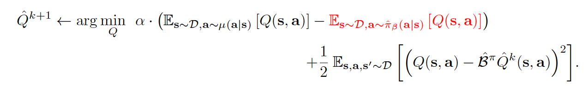
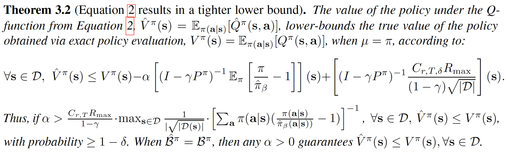
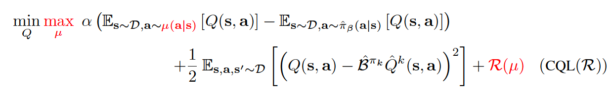
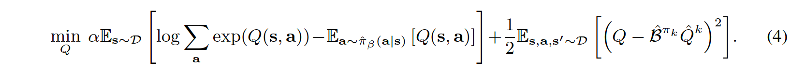
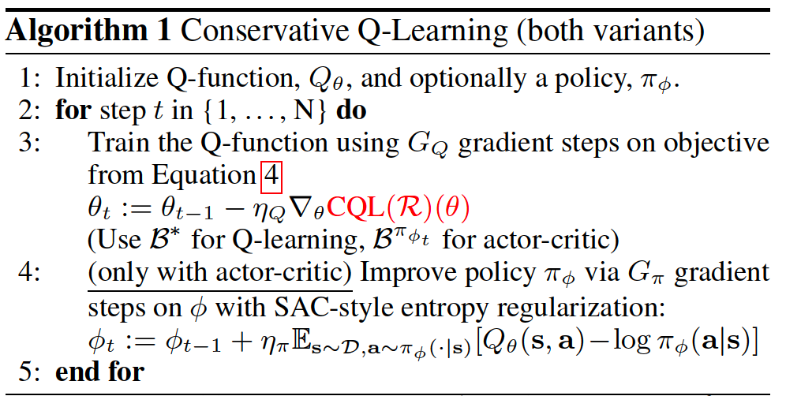
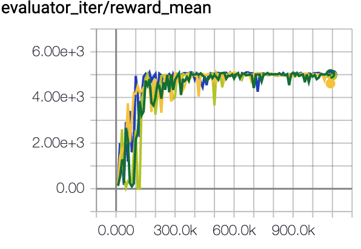
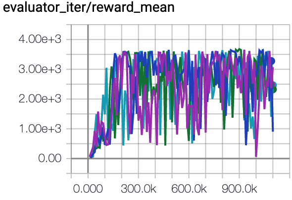
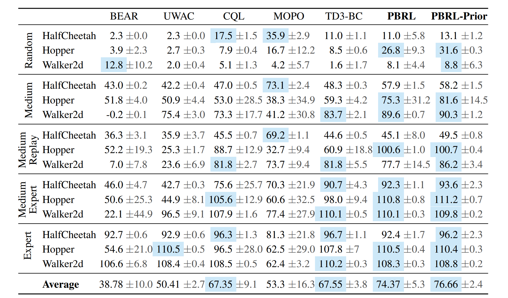

CQL¶
Overview¶
Offline reinforcement learning (RL) is a re-emerging area of study that aims to learn behaviors using large, previously collected datasets, without further environment interaction. It has the potential to make tremendous progress in a number of real-world decision-making problems where active data collection is expensive (e.g., in robotics, drug discovery, dialogue generation, recommendation systems) or unsafe/dangerous (e.g., healthcare, autonomous driving, or education). Besides, the quantities of data that can be gathered online are substantially lower than the offline datasets. Such a paradigm promises to resolve a key challenge to bringing reinforcement learning algorithms out of constrained lab settings to the real world.
However, directly utilizing existing value-based off-policy RL algorithms in an offline setting generally results in poor performance, due to issues with bootstrapping from out-of-distribution actions and overfitting. Thus, many constrain techniques are added to basic online RL algorithms. Conservative Q-learning (CQL), first proposed in Conservative Q-Learning for Offline Reinforcement Learning, is one of them which learns conservative Q functions of which the expected value is lower-bounded via a simple modification to standard value-based RL algorithms.
Quick Facts¶
CQL is an offline RL algorithm.
CQL can be implemented with less than 20 lines of code on top of a number of standard, online RL algorithms
CQL supports both discrete and continuous action spaces.
Key Equations or Key Graphs¶
CQL can be implemented with less than 20 lines of code on top of a number of standard, online RL algorithms, simply by adding the CQL regularization terms to the Q-function update.
In general, for the conservative off-policy evaluation, the Q-function is trained via an iterative update:
{kind=link}
Taking a closer look at the above equation, it consists of two parts - the regularization term and the usual Bellman error with a tradeoff factor alpha. Inside the the regularization term, the first term always pushes the Q value down on the (s,a) pairs sampled from \(\mu\) whereas the second term pushes Q value up on the (s,a) samples drawn from the offline data set.
According to the following theorem, the above equation lower-bounds the expected value under the policy \(\pi\), when \(\mu\) = \(\pi\).
For suitable \(\alpha\), the bound holds under sampling error and function approximation. We also note that as more data becomes available and |D(s; a)| increases, the theoretical value of \(\alpha\) that is needed to guarantee a lower bound decreases, which indicates that in the limit of infinite data, a lower bound can be obtained by using extremely small values of \(\alpha\).
Note that the analysis presented below assumes that no function approximation is used in the Q-function, meaning that each iterate can be represented exactly. the result in this theorem can be further generalized to the case of both linear function approximators and non-linear neural network function approximators, where the latter builds on the neural tangent kernel (NTK) framework. For more details, please refer to the Theorem D.1 and Theorem D.2 in Appendix D.1 in the original paper.
{kind=link}
So, how should we utilize this for policy optimization? We could alternate between performing full off-policy evaluation for each policy iterate, \(\hat{\pi}^{k}(a|s)\), and one step of policy improvement. However, this can be computationally expensive. Alternatively, since the policy \(\hat{\pi}^{k}(a|s)\) is typically derived from the Q-function, we could instead choose \(\mu(a|s)\) to approximate the policy that would maximize the current Q-function iterate, thus giving rise to an online algorithm. So, for a complete offline RL algorithm, Q-function in general updates as follows:
{kind=link}
where \(CQL(R)\) is characterized by a particular choice of regularizer \(R(\mu)\). If \(R(\mu)\) is chosen to be the KL-divergence against a prior distribution, \(\rho(a|s)\), then we get \(\mu(a|s)\approx \rho(a|s)exp(Q(s,a))\). Firstly, if \(\rho(a|s)\) = Unif(a), then the first term above corresponds to a soft-maximum of the Q-values at any state s and gives rise to the following variant, called CQL(H):
{kind=link}
Secondly, if \(\rho(a|s)\) is chosen to be the previous policy \(\hat{\pi}^{k-1}\), the first term in Equation (4) above is replaced by an exponential weighted average of Q-values of actions from the chosen \(\hat{\pi}^{k-1}(a|s)\).
Pseudo-code¶
The pseudo-code is shown in Algorithm 1, with differences from conventional actor critic algorithms (e.g., SAC) and deep Q-learning algorithms (e.g.,DQN) in red
{kind=link}
The equation (4) in above pseudo-code is:
Note that during implementation, the first term in the equation (4) will be computed under torch.logsumexp, which consumes lots of running time.
Implementations¶
The default config of CQLPolicy is defined as follows:
Benchmark¶
environment |
best mean reward |
evaluation results |
config link |
comparison |
|---|---|---|---|---|
HalfCheetah (Medium Expert) |
57.6 \(\pm\) 3.7 |

|
CQL Repo (75.6 \(\pm\) 25.7) |
|
Walker2d (Medium Expert) |
109.7 \(\pm\) 0.8 |
 | CQL Repo (107.9 \(\pm\) 1.6) |
|
Hopper (Medium Expert) |
85.4 \(\pm\) 14.8 |
 | CQL Repo (105.6 \(\pm\) 12.9) |
Specifically for each dataset, our implementation results are as follows:
environment |
random |
medium replay |
medium expert |
medium |
expert |
|---|---|---|---|---|---|
HalfCheetah |
18.7 \(\pm\) 1.2 |
47.1 \(\pm\) 0.3 |
57.6 \(\pm\) 3.7 |
49.7 \(\pm\) 0.4 |
75.1 \(\pm\) 18.4 |
Walker2d |
22.0 \(\pm\) 0.0 |
82.6 \(\pm\) 3.4 |
109.7 \(\pm\) 0.8 |
82.4 \(\pm\) 1.9 |
109.2 \(\pm\) 0.3 |
Hopper |
3.1 \(\pm\) 2.6 |
98.3 \(\pm\) 1.8 |
85.4 \(\pm\) 14.8 |
79.6 \(\pm\) 8.5 |
105.4 \(\pm\) 7.2 |
P.S.：
The above results are obtained by running the same configuration on four different random seeds (5, 10, 20, 30)
The above benchmark is for HalfCheetah-v2, Hopper-v2, Walker2d-v2.
The comparison results above is obtained via the paper Pessimistic Bootstrapping for Uncertainty-Driven Offline Reinforcement Learning. The complete table is depicted below
The above Tensorboard results illustrate the unnormalized results
{kind=link}
Reference¶
Kumar, Aviral, et al. “Conservative q-learning for offline reinforcement learning.” arXiv preprint arXiv:2006.04779 (2020).
Chenjia Bai, et al. “Pessimistic Bootstrapping for Uncertainty-Driven Offline Reinforcement Learning.”